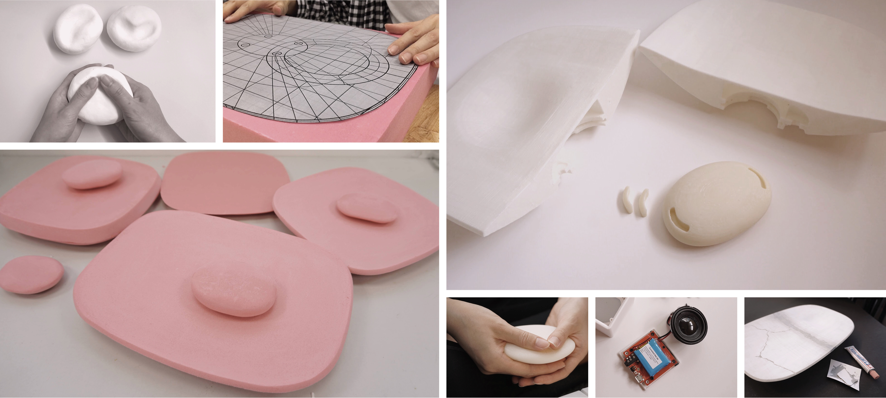

Sati z0
Home Meditation Set
User experience design
Product design
01
Finding the problem
Stress is increasingly commonplace. Talking about how stressful their lives and works are, some of my friends could not find a way to relieve their stress, and not surprisingly, a handful of them are tackling different kinds of mental illnesses.
As stress can have a detrimental effect on an individual’s emotional and physical wellbeing, I hope to come up with an effective stress reducing solution regarding the specific sociocultural context of Hong Kong.
How might we reduce stress effectively regarding the specific sociocultural context of Hong Kong?
Literature review
Initially, some fundamental information was collected by reviewing a range of papers, journals, books, magazines, etc. in order to gain insights into the stress problem in Hong Kong and some concepts including user-centred design, emotion and stress, work stress coping strategies and salutogenesis. Below are the key information collected, which prepared me for drafting the guidelines for the steps ahead.
User experience design approach is key to bring out an effective stress reducing solution by the selection of research and design tools.
Emotion is dependent on the stress level perceived, which will affect behaviour and working perfomance. Hence, it is crucial to maintain and enhance positive emotions.
Relaxation is more practical than cognitive-behaviourial interventions in terms of the cost and viability for implementation.
Salutogenetic elements provide a sense of coherence in relaxation and promote positive emotions.
Interview
After the stage of literature review, I interviewed 10 working people in Hong Kong to have a thorough understanding regarding their stress level, home and working environment, stress coping strategies and stress reducing elements. These data were then analysed using aggregated empthay map to look for the painpoints and opportunities.
Analysis of transcript by catergorising into “Doing”, “Feeling” and “Thinking”
Aggregated empathy map
Field Visit
At this stage of the process, I visited 3 respondents’ home and evaluated the environment, physical arrangement and elements affecting emotion.
The home environments generally were insufficient to let the inhabitants be calm and relax after a long day of work, since they lacked a certain level of privacy and calming elements.

Insights
1. The product would be an individual stress reducing design which facilitates psychological relaxation, meditation and deep breathing.
2. It is handy and occupying not much space to fit the small size of homes in Hong Kong.
3. Relaxing elements, such as music, natural sound and natural view can be integrated into the solution.
02
Ideation
The initial ideas were developed according to the 3 criteria extracted from the research result to provide meditation guides in various ways.
Concept Development
The concepts of self-healing concrete meditation set providing natural sound, natural texture and meditation guide and conductive charging stress level monitor with mobile app providing meditation guide were chosen to develop into the final design due to the feasibility in the context of Hong Kong, efficiency in reducing stress and aesthetics.

Final Concept
The final design consists of a pebble, a self-healing concrete base and a mobile app. The pebble is a heart rate detector and inductive charged by the concrete base. Beside charging the pebble, the concrete base contains speaker which can play meditation guides or natural soothing sounds. The pebble and base are both connected to a mobile app.
03
Prototyping and Testing
In addition to 2D form development, 3D foam modelling was used to test the ergonomics and the look and feel of the design by the users, enabling them to give immediate feedbacks for developing an intuitive user-centred solution.

04
Design Considerations
Exploring the Convergence of Interaction and Technology
Materials
As a heart rate detecting monitor, the Pebble is made of silicone, which best resembles human skin texture, providing a feeling of comfort and safe when being held.
The two electrode plates on the lower surface of the Pebble for measuring the heart rate of users.
As inductive charging works based on the principle of resonance of magnetic field, the charger surface should be thin enough to ensure better transmission of electricity. Therefore, the cap covering the induction coil in the Concrete base is made of polypropylene and spray painted to be looked like concrete.

Metaphor of Concrete
Cracks may result during manufacture and as time goes by. The self-healing concrete can be repaired by itself through applying a small portion of water to the crack everyday. If a person do daily meditation, one's mind will also be repaired one day. Mindfulness meditation is a self-healing process to help ourselves out from stress.
Usage Scenario
Turn on z0 with hand gesture.
Hold the pebble with both hands. The heart rate data is sent to the app through Bluetooth.
The app analyses the stress level and choose the meditation course for the users. The meditation guide starts.
After meditation, the record can be checked in the app.
User Flow
The user flow chart illustrates the steps that the user may take to access to different features. This process facilitated me to understand every detail that is needed to be considered when building an app.


Technical Considerations
Wi-Fi card inside the concrete base emits Wi-fi signal to detect hand gestures as a way of instinctive control.
The Pebble is charged by inductive charging. To facilitate this, two sets of induction coil are installed in the bottom of the Pebble and Concrete base respectively.
Speaker holes under the concrete base allows sounds to penetrate to the environment.